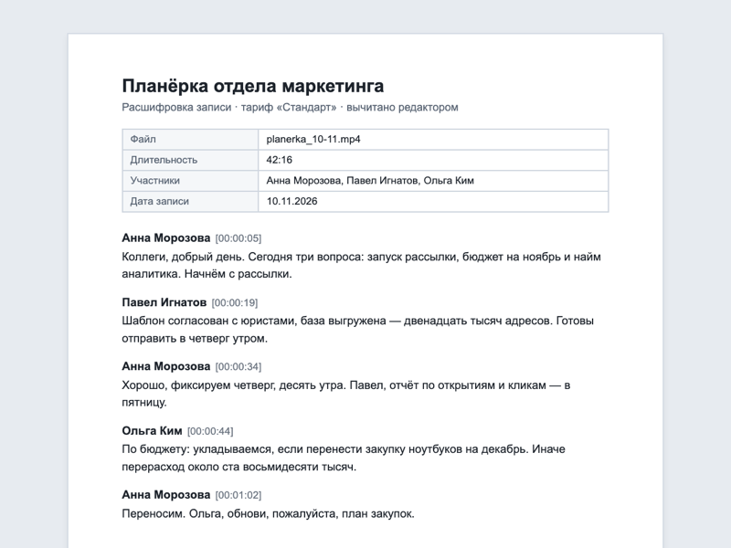

Совещание
Планёрка отдела маркетинга
Расшифровка
-
Анна Морозова
Коллеги, добрый день. Сегодня три вопроса: запуск рассылки, бюджет на ноябрь и найм аналитика. Начнём с рассылки.
-
Павел Игнатов
Шаблон согласован с юристами, база выгружена — двенадцать тысяч адресов. Готовы отправить в четверг утром.
-
Анна Морозова
Хорошо, фиксируем четверг, десять утра. Павел, отчёт по открытиям и кликам — в пятницу.
-
Ольга Ким
По бюджету: укладываемся, если перенести закупку ноутбуков на декабрь. Иначе перерасход около ста восьмидесяти тысяч.
-
Анна Морозова
Переносим. Ольга, обнови, пожалуйста, план закупок.
-
Ольга Ким
Сделаю до понедельника.
-
Павел Игнатов
По аналитику: текст вакансии готов, осталось согласовать вилку с HR.
-
Анна Морозова
Согласую сама до пятницы. На сегодня всё, спасибо.
Протокол: решения
- Рассылку по клиентской базе отправить в четверг в 10:00.
- Закупку ноутбуков перенести на декабрь, бюджет ноября не превышать.
- Открыть вакансию аналитика данных после согласования вилки с HR.
| Поручение | Ответственный | Срок |
|---|---|---|
| Отправить рассылку по клиентской базе | П. Игнатов | 12 ноября |
| Подготовить отчёт по открытиям и кликам | П. Игнатов | 13 ноября |
| Обновить план закупок на декабрь | О. Ким | 16 ноября |
| Согласовать вилку вакансии с HR | А. Морозова | 13 ноября |
Так расшифровка выглядит в файле DOCX
